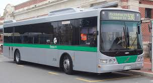

Exploring the Beauty of Nature

Nature can refer to the general realm of living plants and animals, and in some cases to the processes associated with inanimate objects—the way that particular types of things exist and change of their own accord, such as the weather and geology of the Earth.
Exploring the Beauty of Animals

Animals are multicellular eukaryotes whose cells are bound together by collagen. Animals dominate human conceptions of life on Earth because of their size, diversity, abundance, and mobility. The presence of muscles and mobility is one of the primary characteristics of the animal kingdom.
Exploring the Beauty of Transports

A vehicle is a machine designed for self-propulsion, usually to transport people, cargo, or both. Vehicles include wagons, bicycles, motor vehicles, railed vehicles, watercraft, amphibious vehicles, aircraft, and spacecraft.